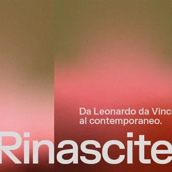

da sab 14 nov a dom 21 feb
Rinascite. Da Leonardo da Vinci al contemporaneo.
Nel cinquantesimo anniversario del devastante terremoto che nel 1976 colpì il Friuli, la Regione Autonoma Friuli Venezia Giulia ed ERPAC presentano la grande mostra RINASCITE. Da Leonardo da Vinci al contemporaneo.
 Indicazioni
Indicazioni
- Costi e prenotazioni
- Costo non indicato · Prenotazione non indicata
- Programma
- Programma da verificare. Apri la fonte ufficiale per orari e possibili aggiornamenti.
- In caso di maltempo
- Nessuna indicazione specifica pubblicata.
- Note
- Acquisito automaticamente dalla fonte.
L’EVENTO
Descrizione completa
Nel cinquantesimo anniversario del devastante terremoto che nel 1976 colpì il Friuli, la Regione Autonoma Friuli Venezia Giulia ed ERPAC presentano la grande mostra RINASCITE. Da Leonardo da Vinci al contemporaneo. A cinquant’anni di distanza, superata ormai la soglia del ricordo puramente cronologico, la vicenda del Friuli si rivela come un modello civile e culturale di straordinaria attualità. “Il terremoto del Friuli è parte integrante della storia regionale e nazionale e può essere osservato come un fenomeno capace di illuminare questioni che riguardano il presente: il rapporto tra comunità e territorio, tra patrimonio e identità, tra crisi e trasformazione” spiega il curatore Villa.
Attraverso un ricco percorso che intreccia documentazione d’epoca, capolavori dell’arte antica e opere di protagonisti del contemporaneo, la mostra indaga il concetto del “secondo giorno” come lo definì Gianni Rodari inviato di “Paese Sera”: quella dimensione ideale e civile in cui una comunità comprende che il proprio destino non coincide con la somma delle perdite e sceglie responsabilmente di tornare a progettare il proprio avvenire.
La mostra non propone una semplice ricostruzione degli eventi. Interroga un problema che attraversa la storia delle società umane: in che modo una comunità attribuisce significato alla distruzione? Attraverso quali strumenti culturali elabora la perdita? Quali immagini, quali narrazioni, quali forme simboliche permettono di immaginare un futuro dopo una frattura?
È a questo punto che la riflessione incontra il campo delle immagini. Ogni società ha elaborato le proprie esperienze traumatiche attraverso forme narrative, simboliche e visive. Le immagini conservano la memoria degli eventi e consentono alle comunità di organizzare, trasmettere e comprendere l’esperienza della perdita. Attraverso di esse la distruzione entra nel campo della cultura e diviene oggetto di riflessione collettiva.
La mostra si sviluppa all’interno dell’Esedra di Levante di Villa Manin – luogo che per la sua stessa storia incarna i concetti di durata, memoria e trasformazione – articolandosi su tre livelli che ampliano progressivamente lo sguardo dalla cronaca locale alla storia della cultura occidentale.
ORARI Martedì – Domenica dalle 10.00 alle 19.00
Aperture straordinarie (con orario 09:30 – 18:00): lunedì 7, martedì 8, lunedì 21, sabato 26, lunedì 28 e giovedì 31 dicembre 2026 (9.30 – 14.30); venerdì 1, lunedì 4, mercoledì 6 gennaio 2027 e lunedì 8 febbraio 2027
INFO BIGLIETTI: https://www.villamanin.it/evento/rinascite-da-leonardo-da-vinci-al-contemporaneo/
ALTRE INFORMAZIONI È possibile depositare borse e zaini negli armadietti a disposizione gratuitamente.
Per ragioni conservative disegni e dipinti non sono fotografabili nemmeno senza flash
Accesso e servizi per i disabili.
Non sono ammessi ombrelli, animali, cibo e bevande.
All’interno della mostra sono consentiti marsupi per bambini.
Gli smartphone in mostra devono essere tenuti in modalità silenziosa.
Non sono attivi i circuiti di pagamento Bonus docente e 18App.
IL PROGRAMMA
Programma e orari
Appuntamenti raccolti dalle fonti elencate. Dove manca un orario, non è ancora disponibile in questa scheda.
Programma pubblicato
- Dal 2026-11-14 al 2027-02-21
INFORMAZIONI UTILI
Prima di partire
- Controllare la fonte prima di partire.
ORGANIZZAZIONE